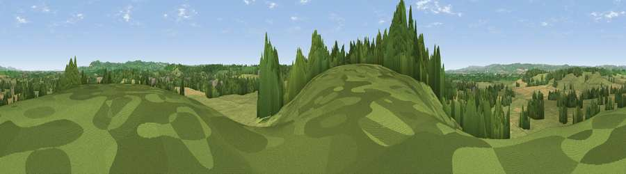

Viewpoint near Rockhampton
#21285 in England · top 35% of its area beats it · near RockhamptonThe view, rendered

A 360° render of this exact spot computed from the terrain model, tree cover and land cover — summer colours, afternoon light, calibrated against photographs of famous viewpoints. Real trees, hedges and buildings will differ in detail.
The panorama
Grey silhouette: terrain skyline in each direction (720 bearings, Earth curvature and refraction included). Dashed green: skyline with trees (+15 m) and buildings (+8 m) as obstacles. Blue strip: how far the ground is visible on each bearing.
Where the view opens
Wedge length = distance to the farthest visible ground on that bearing (vegetation-aware). Rings at 10, 25 and 50 km.
What fills the view
67% grassland · 21% woodland · 11% cropland · 1% built-up
Angular shares of the visible panorama (visual magnitude), not map area. Landscape diversity 0.39 (0–1 Shannon).
Key numbers
More beautiful places nearby
The staircase of upgrades: each row has a higher view potential than everything closer. Driving times are estimates from straight-line distance, calibrated against real road routing — check an actual route before setting out.
| Place | Direction | Drive | Score |
|---|---|---|---|
| Viewpoint near Rockhampton | SW · 2 km | ~5 min | 52.6 |
| Viewpoint near Tortworth | ESE · 3 km | ~7 min | 57.5 |
| Viewpoint near North Nibley | E · 8 km | ~16 min | 76.3 |
| Viewpoint near Stinchcombe | NE · 8 km | ~16 min | 80.5 |
| Garway Hill | NW · 39 km | ~58 min | 84.6 |
| Millennium Hill | N · 47 km | ~68 min | 86.9 |
| Worcestershire Beacon | N · 53 km | ~74 min | 87.1 |
| Viewpoint near West Quantoxhead | SW · 75 km | ~98 min | 87.9 |
51.63954, -2.48079 · source: screening · position refined by local search. Computed location — check access rights before visiting.